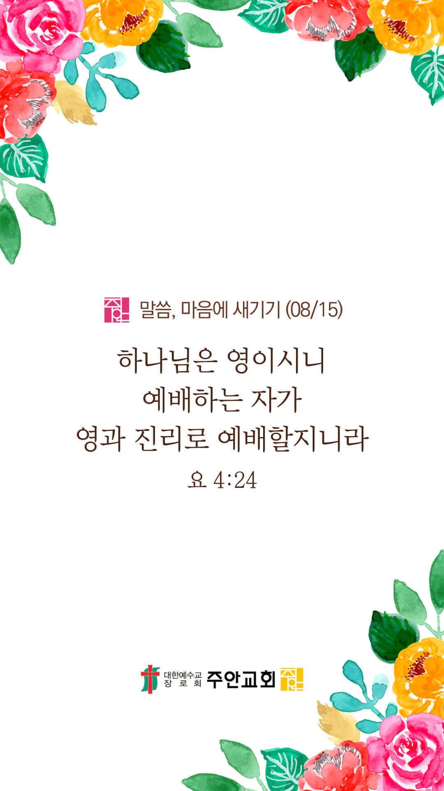

온라인 기도실 안내
2021년 08월15일(일)~08월 21일(토)
- 온라인 기도실은 온 회중이 함께 주님 앞으로 나아가는 자리입니다
- 30분 정도 여유를 가지고 하시기 바랍니다
- 말씀과 묵상, 찬양과 기도로 나아갑니다
- 배경 음악이 나올 수 있습니다 볼륨을 조절해주세요
준비가 되셨으면 아래의 버튼을 눌러주세요
할렐루야
내 영혼아 여호와를 찬양하라
시 146:1
- 가사를 묵상하며 읽습니다
나의 피난처 예수 의지해요
나의 피난처 예수 의지해요
나의 가는 길에 거센 바람 몰아쳐와도
나의 피난처 예수 의지해요
나는 영원히 주님 사랑해요
나는 영원히 주님 사랑해요
할렐루야
내 영혼아 여호와를 찬양하라
시 146:1
- 가사를 묵상하며 읽습니다
세상 어떤 것도 나의 사랑 끊을 수 없네
나는 영원히 주님 사랑해요
아바 아버지 나를 사랑하시니
나의 모든 것 주께 드려요
아바 아버지 내가 여기 있으니
주님 영광 위하여 써 주세요
할렐루야
내 영혼아 여호와를 찬양하라
시 146:1
나의 피난처 예수 by 시와 그림
위의 찬양이 끝나면 말씀읽기를 눌러주시면 됩니다
주의 말씀은 내 발에 등이요
내 길에 빛이니이다 (시119:105)
오늘의 말씀입니다
음악 소리가 크면 조절하시기 바랍니다

마음의 묵상
요 4:24
“하나님은 영이시니 예배하는 자가 영과 진리로 예배할지니라”
1. 평소 어떤 마음가짐으로 예배하시나요?
2. 영으로 예배한다는 의미는 무엇일까요?
3. 진리로 예배한다는 의미는 무엇일까요?
주님을 영과 진리로 예배합니다
회개, 삶의 방향을 바꾸는 결정
우리의 작은 용서가 하나님의 크신 사하심과 연결됩니다
“서서 기도할 때에 아무에게나 혐의가 있거든 용서하라 그리하여야 하늘에 계신 너희 아버지께서도 너희 허물을 사하여 주시리라 하시니라”
- 마가복음 11:25 -
3분 정도 회개하며 주님 앞에 나아갑니다
사슴이 시냇물을 찾기에 갈급함 같이
시42:1
- 다음의 말씀을 소리 내어 읽습니다
[마가복음 12장 28-31절]
28 서기관 중 한 사람이 그들이 변론하는 것을 듣고 예수께서 잘 대답하신 줄을 알고 나아와 묻되 모든 계명 중에 첫째가 무엇이니이까
29 예수께서 대답하시되 첫째는 이것이니 이스라엘아 들으라 주 곧 우리 하나님은 유일한 주시라
사슴이 시냇물을 찾기에 갈급함 같이
시42:1
- 다음의 말씀을 소리 내어 읽습니다
[마가복음 12장 28-31절]
30 네 마음을 다하고 목숨을 다하고 뜻을 다하고 힘을 다하여 주 너의 하나님을 사랑하라 하신 것이요
31 둘째는 이것이니 네 이웃을 네 자신과 같이 사랑하라 하신 것이라 이보다 더 큰 계명이 없느니라
하나님 나라
1. 하나님의 나라가 속히 이 땅에 임하게 하소서
하나님 아버지,
전 세계에 바이러스와 변이 바이러스의 확산이 그치게 하소서. 전 세계에 파송된 선교사님들과 그 가족들을 지켜 주시고, 도와주소서.
그들을 통하여 전 세계 열방에 계속해서 자유의 복음이 전파되게 하시고, 코로나19 이후 온 세계에 복음을 통한 참 해방의 역사가 이루어지게 하소서.
간절한 마음으로 3분 정도 기도합시다
남과 북
2. 남북한이 속히 복음으로 통일되게 하소서
하나님 아버지,
바이러스와 기근 그리고 폭우로 인하여 고통 받고 있는 북한 주민들을 긍휼히 여겨주소서. 올해 농사에 사활을 걸고 있는
북한 정권이 살아계신 하나님이 역사의 주관자이심을 깨닫고 겸손히 하나님 앞에 나아오게 하소서. 북한 주민들이
공산독재와 굶주림과 억압에서 속히 해방될 수 있도록 도우소서.
간절한 마음으로 3분 정도 기도합시다
대한민국
3. 우리나라가 하나님을 경외하는 나라가 되게 하소서
하나님 아버지,
광복절 76주년을 맞이하여, 우리 민족에게 진정한 해방을 허락하여 주소서. 많은 이들이 물질과 권력과 욕망과 쾌락의
노예가 되어 죄악 가운데 살고 있사오니, 이 민족의 교만과 타락을 용서하시고, 은혜와 긍휼을 베푸사 참 자유를 누리게
하소서. 변이 바이러스가 힘을 잃게 하시고, 바이러스의 공격으로부터도 해방되게 도우소서. 또한 바이러스로 인해 무너진
자영업자들과 소상공인들의 신음소리를 들어주시고, 모든 고통에서 해방되게 하소서. 어려운 때일수록 우리 민족이 서로
섬기며 가진 것을 이웃과 함께 나누는 복된 민족이 되게 하소서.
간절한 마음으로 3분 정도 기도합시다
한국교회
4. 한국교회가 성령으로 새롭게 부흥되게 하소서
하나님 아버지,
비대면 상황 속에서 더욱 더 교묘해지는 이단들을 막아주소서. 바이러스로 인해서 관계와 공동체에 갈망을 느끼고 있는
이들이 헛된 이단의 유혹(홍보 우편물, 정성스러운 손편지, 각종 영상 콘텐츠 배포 등)에 넘어가지 않게 하소서.
한국 교회가 성도들과 더불어 사랑과 관심이 필요한 이웃들을 섬기는 선교적 교회가 되게 하소서.
간절한 마음으로 3분 정도 기도합시다
주안교회
5. 주안교회가 다음 세대를 세우는 선교적 교회가 되게 하소서
하나님 아버지,
주안의 모든 성도들이 “해야 할 것을 하지 못하고, 하지 말아야 할 것을 하면서 끌려 다니는 노예의 삶을 사는 존재”가 아니라,
진리이신 예수님과 함께 살고, 진리의 말씀 안에 거하면서 참 자유의 삶을 살게 하소서. 그리고 참 자유의 복음을 들고 나가,
죄로부터 자유를 얻지 못하고 신음하고 있는 수 많은 사람들을 그리스도 안에서 자유케 하는 아름다운 하나님의 자녀들이 되게 하소서.
간절한 마음으로 3분 정도 기도합시다
감사의 기도
- 오늘 기도를 인도하신 주님께 감사를 올려드립니다
- 아래의 구절을 읽고 주님께 감사의 마음을 올려드립시다
“주는 나의 하나님이시라 내가 주께 감사하리이다 주는 나의 하나님이시라 내가 주를 높이리이다(시 118:28)”
- 시편 118장 28절 -
고요한 가운데 잠시 침묵하시기 바랍니다
파송, 세상을 향하여
- 오늘의 온라인 기도를 마쳤습니다
기도를 들으신 주님께서 평안히 가라 하십니다
주님께서 우리와 함께 하시니 두려울 것이 없습니다
새벽을 깨우며
- 새벽기도회 안내입니다